Copyright Information
2023-2023 Oceanic Systems (UK) LTD. All Rights Reserved.
This document is subject to change and revision without notice. No part of this document may be reproduced in any form by any photographic, electronic, mechanical or
other means, or used in any information storage and retrieval system, without prior written permission from Oceanic Systems.
All other product and brand names in this document are trademarks or registered trademarks of their respective owners.
It can be found on top left side of the main screen.
The elements are:
New Creates new settings Open Opens existing settings Check Checks the current logic diagram Save Saves current settings
It can be found below of the file menu.
The elements are:
Alarm Setup - Selects alarm definition screen
Logic Rules - Selects logic diagram screen
MODBUS Setup - Selects MODBUS definition screen
User Manual - Selects manual screen
The defined alarms will be used in logic definitions to rise alarms in certain conditions. These alarms will be shown and can be handled in Poseidon alarm widget.
This screen consists of 3 definition areas:
Alarm groups - Alarm group definitions
Alarm Zones - Alarm zone definitions
Alarms - Alarm definitions
Each area has control menu at the bottom of the area (in order):
Add Creates new area definition Edit Edits area definition Delete Deletes area definition
Creating new alarm group:
Push the "Add" button of the bottom menu. It opens alarm group setup popup with editable title. Push the "Save" button at the bottom of popup to create new alarm group with the given title.
Editing alarm group:
Push the "Edit" button of the bottom menu. It opens alarm group setup popup with editable title. Push the "Save" button at the bottom of popup to modify alarm group with the given title.
Deleting alarm group:
Push the "Delete" button of the bottom menu. It opens a confirmation popup. Push the "Yes" button at the bottom of popup to delete alarm group.
Creating new alarm zone:
Push the "Add" button of the bottom menu. It opens alarm zone setup popup with editable title and sounders definition. The sounders definition area of the screen makes possible to attach sounders to the alarm zone definition. This area also has bottom menu similar to previous area control menu. Push the "Save" button at the bottom of popup to create new alarm zone with the given content.
Editing alarm zone:
Push the "Edit" button of the bottom menu. It opens alarm zone setup popup with editable title and sounders definition. For sounders definition see previous section. Push the "Save" button at the bottom of popup to modify alarm zone with the given content.
Deleting alarm zone:
Push the "Delete" button of the bottom menu. It opens a confirmation popup. Push the "Yes" button at the bottom of popup to delete alarm zone.
Creating new sounder:
Push the "Add" button of the sounder area bottom menu. It opens sounder setup popup with editable title, bus and instance. The bus parameter is the CAN line number, the instance is the sounder instance or 255 for all sounders on the bus. Push the "Save" button at the bottom of popup to create new sounder with the given content.
Editing sounder:
Push the "Edit" button of the sounder area bottom menu. It opens sounder setup popup with editable title, bus and instance. For sounder definition see previous section. Push the "Save" button at the bottom of popup to modify sounder with the given content.
Deleting sounder:
Push the "Delete" button of the sounder area bottom menu. It opens a confirmation popup. Push the "Yes" button at the bottom of popup to delete sounder.
Zone definiton is optional for alarms. Only alarm definitions with zone definitions will sound on the attached sounders.
Creating new alarm:
Push the "Add" button of the bottom menu. It opens alarm setup popup with selectable group, editable title, description, selectable zone definition, editable silencing and ON/OFF delays. Push the "Save" button at the bottom of popup to create new alarm group with the given title.
Editing alarm:
Push the "Edit" button of the bottom menu. It opens alarm setup popup with editable selectable group, editable title, description, selectable zone definition, editable silencing and ON/OFF delays. Push the "Save" button at the bottom of popup to modify alarm group with the given title.
Deleting alarm:
Push the "Delete" button of the bottom menu. It opens a confirmation popup. Push the "Yes" button at the bottom of popup to delete alarm.
Logic diagram content:
The logic page selector
The logic drawing area
The logic bottom menu
The available logic components
Logic diagram manupulation:
Creating or modifying the logic
Loading existing logic
Saving curren logic
It can be found on top right side of the logic diagram screen.
This horizontal bar is made for create a new one or selecting between logic diagram pages.
It can be found below the logic page selector bar. It is filled with dots for the proper positioning of the logic elements and connections.
It can be found below the logic drawing area.
The buttons (in order):
Zoom In Increases magnification of logic draw area Zoom to 100% Sets back maginifitaion to 100% Zoom Out Decreases magnification of logic draw area Undo Discards the last change of drawing Redo Recovers previous discard Add Creates new logic component
If there are selected component(s) or connection(s):
Edit Edits selected component properties Delete Deletes the selection Copy Copies selection to the clipboard Cut Copies selection to the clipboard and removes after paste Paste Inserts selection from the clipboard
The components (in order):
1. Group box
2. Sensor input
3. Sensor output
4. Alarm input
5. Alarm output
6. Virtual input (for screen connections)
7. Virtual output (for screen connections)
8. Logic gates
8/1. AND gate 8/2. OR gate 8/3. XOR gate 8/4. NOT gate 8/5. NOR gate 8/6. NAND gate 8/7. SR Flip-flop 8/8. Selector
9/1. Greater then 9/2. Greater or equal 9/3. Lower then 9/4. Lower or equal 9/5. Equal 9/6. Not equal
10/1. Addition 10/2. Substraction 10/3. Multiplication 10/4. Division 10/5. Modulo 10/6. Absolute value 10/7. Average value
11/1. Count up 11/2. Count dowm 11/3. Pulse timer
12/1. Integrator 12/2. Boolean delay 12/3. Switch block 12/4. Storage 12/5. Script 12/6. Propagation 12/7. Pulse counter 12/8. Encoder 12/9. Decoder 12/10. TRUE counter 12/11. Mute State
Selector image:

Description:
Summary: A group box helps to graphically group of components in a circuit. Input: None Output: None Settings: Label: Defines box title
Selector image:
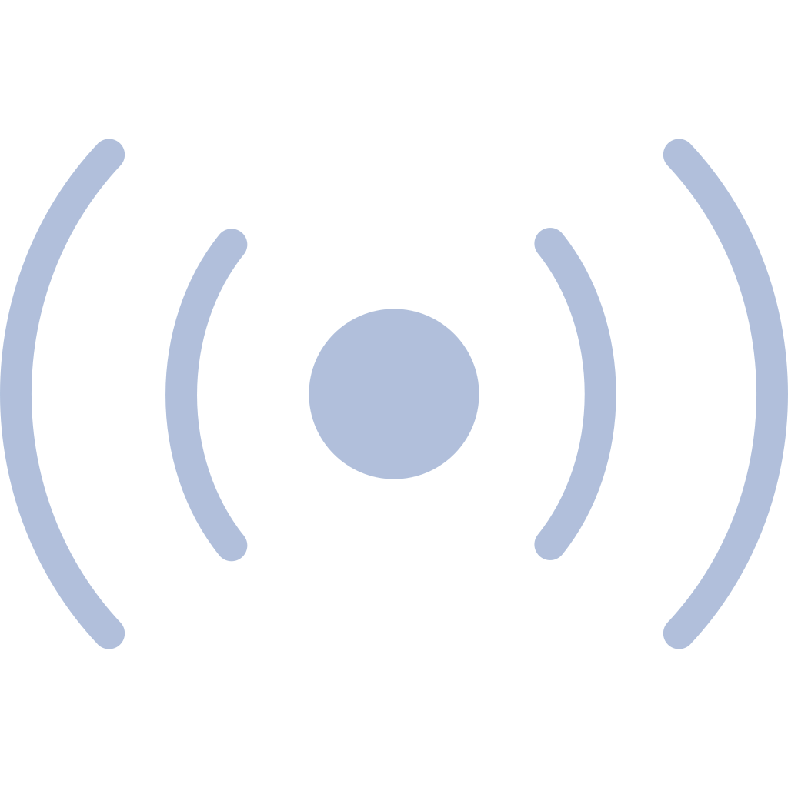Description:
Summary: A sensor input takes live sensor data available on the system, and provides it to other logic component(s). It updates its' output when the sensor value is changed. Input: None Output: Selected sensor data Settings: Protocol: NMEA2k, J1939 Bus: CAN line Message: PGN Field: PGN field
Selector image:
Description:
Summary: A sensor output takes data from other logic component and provides it to live sensor on the system. It updates its' output when the input value is changed. Input: Data of connected component Output: None Settings: Protocol: NMEA2k, J1939 Bus: CAN line Message: PGN Instance: Device instance (if applicable) Field: PGN field
Selector image:

Description:
Summary: An alarm input takes alarm state data available on the system, and provides it to other logic component(s). It updates its' output when the alarm state is changed. Input: None Output: Selected alarm state Settings: Group: Engine, Transmission, General Bus: CAN line (Engine, Transmission) Instance: Device instance (Engine, Transmission) Discrete bit: Discrete bit (Engine, Transmission) Alarm: Selected alarm (General)
Selector image:
Description:
Summary: An alarm output takes data from other logic component and provides it to alarm engine on the system. It updates its' output when the input value is changed. Input: Data of connected component Output: None Settings: Group: General (only) Alarm: Selected alarm
Selector image:
Description:
Summary: A virtual input takes data from screen element, and provides it to other logic component(s). It updates its' output when the screen data is changed. Input: None Output: Data of screen element Settings: Description: Individual name for identification
Selector image:

Description:
Summary: A virtual output takes data from other logic component and provides it to a screen element. It updates its' output when the input value is changed. Input: Data of connected component Output: None Settings: Description: Individual name for identification
Description:
Summary: This gate takes data from other logic component(s) and after calculations provides it to another component(s). It updates its' output(s) when the input value(s) is changed. Inputs: Data of connected component(s) Output: Calculated data Settings: Inputs: Count of input pins
Selector image:

Calculation:
Generates logic "AND" value of inputs.
Truth table (for 2 inputs):
| I1 | I2 | O |
|---|---|---|
| 0 | 0 | 0 |
| 0 | 1 | 0 |
| 1 | 0 | 0 |
| 1 | 1 | 1 |
Selector image:
Calculation:
Generates logic "OR" value of inputs.
Truth table (for 2 inputs):
| I1 | I2 | O |
|---|---|---|
| 0 | 0 | 0 |
| 0 | 1 | 1 |
| 1 | 0 | 1 |
| 1 | 1 | 1 |
Selector image:
Calculation:
Generates logic "XOR" value of inputs.
Truth table (for 2 inputs):
| I1 | I2 | O |
|---|---|---|
| 0 | 0 | 0 |
| 0 | 1 | 1 |
| 1 | 0 | 1 |
| 1 | 1 | 0 |
Selector image:
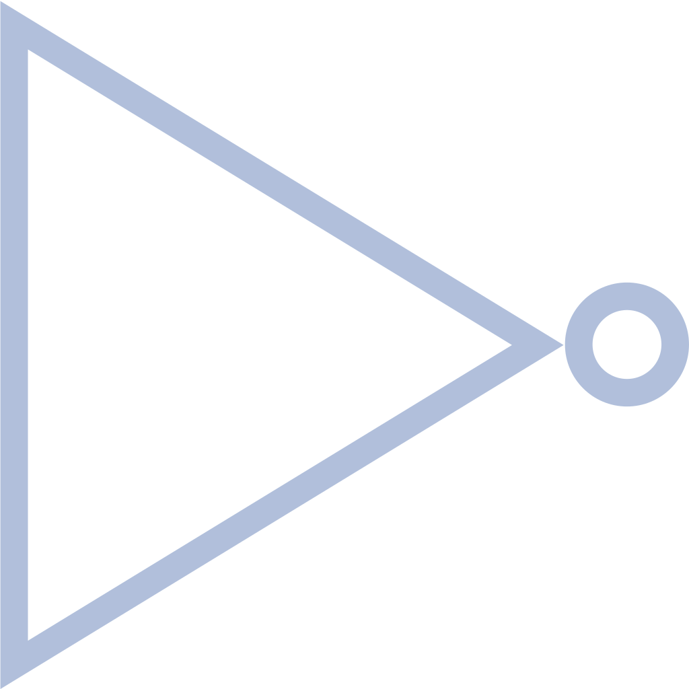Calculation:
Generates logic "NOT" value of input.
Truth table:
| I | O |
|---|---|
| 0 | 1 |
| 1 | 0 |
Selector image:
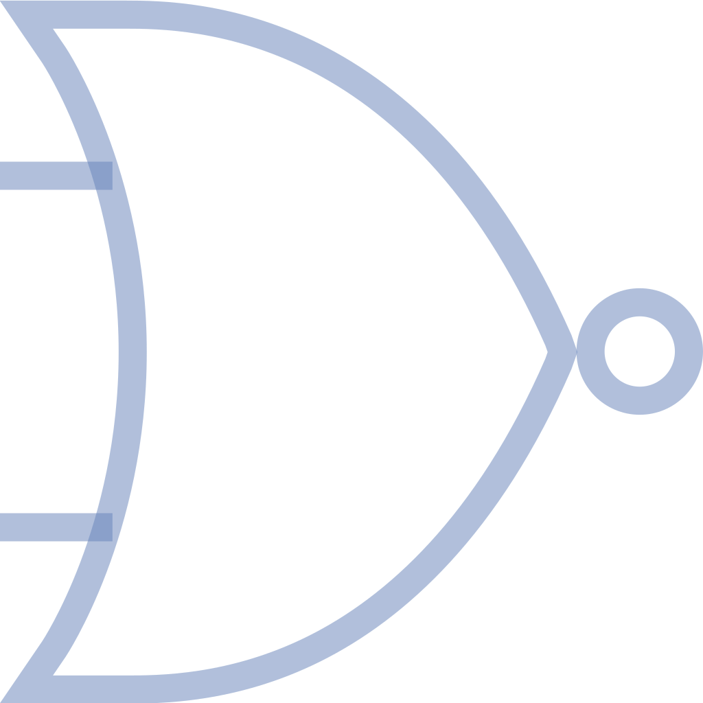Calculation:
Generates logic "NOR" value of inputs.
Truth table (for 2 inputs):
| I1 | I2 | O |
|---|---|---|
| 0 | 0 | 1 |
| 0 | 1 | 0 |
| 1 | 0 | 0 |
| 1 | 1 | 0 |
Selector image:

Calculation:
Generates logic "NAND" value of inputs.
Truth table (for 2 inputs):
| I1 | I2 | O |
|---|---|---|
| 0 | 0 | 1 |
| 0 | 1 | 1 |
| 1 | 0 | 1 |
| 1 | 1 | 0 |
Selector image:
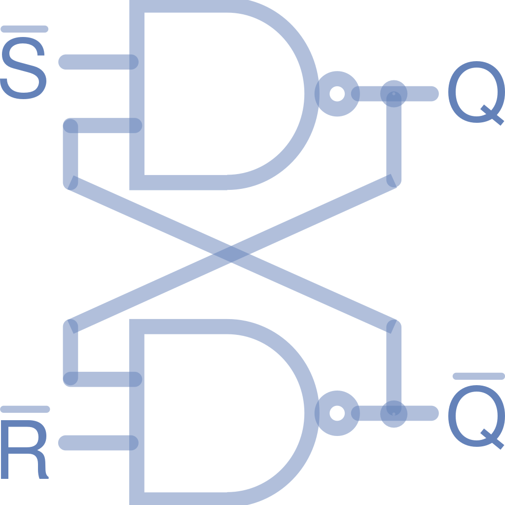Description:
Summary: The SR flip-flop is the 1-bit bistable memory device having two inputs, SET and RESET. The SET input S sets the device or generates the output Q as 1 and Q' as 0. The RESET input R resets the device or generates the output Q as 0 and Q' as 1. Inputs: S (set), R (reset) Outputs: Q, Q' Settings: None
Truth table:
| S | R | Q | Q' | State |
|---|---|---|---|---|
| 0 | 0 | Previous | No change | |
| 0 | 1 | 0 | 1 | Reset |
| 1 | 0 | 1 | 0 | Set |
| 1 | 1 | ? | ? | Invalid |
Selector image:

Description:
Summary: This component takes data from other logic component(s) and provides selected data to another component(s). It updates its' output when the input value(s) is changed. Inputs: Selector, Data1 ... DataN Output: The selected value Settings: Inputs: Count of inputs
Calculation:
Propagates the selected input value to the output. The 'Selector' input value is a number between 1 ... N which makes the selection between Data1 ... DataN.
Description:
Summary: This component takes data from other logic component and after calculations provides it to another component(s). It updates its' output when the input value is changed. Input(s): Data of connected component(s) Output: Calculated data Settings: Data: If defined, data value to compare with otherwise the second input value used by the comparison.
Selector image:

Calculation:
Propagates true if input value greater then the data provided.
Selector image:

Calculation:
Propagates true if input value greater or equal then the data provided.
Selector image:
Calculation:
Propagates true if input value lower then the data provided.
Selector image:

Calculation:
Propagates true if input value lower or equal then the data provided.
Selector image:

Calculation:
Propagates true if input value equal with the data provided.
Selector image:
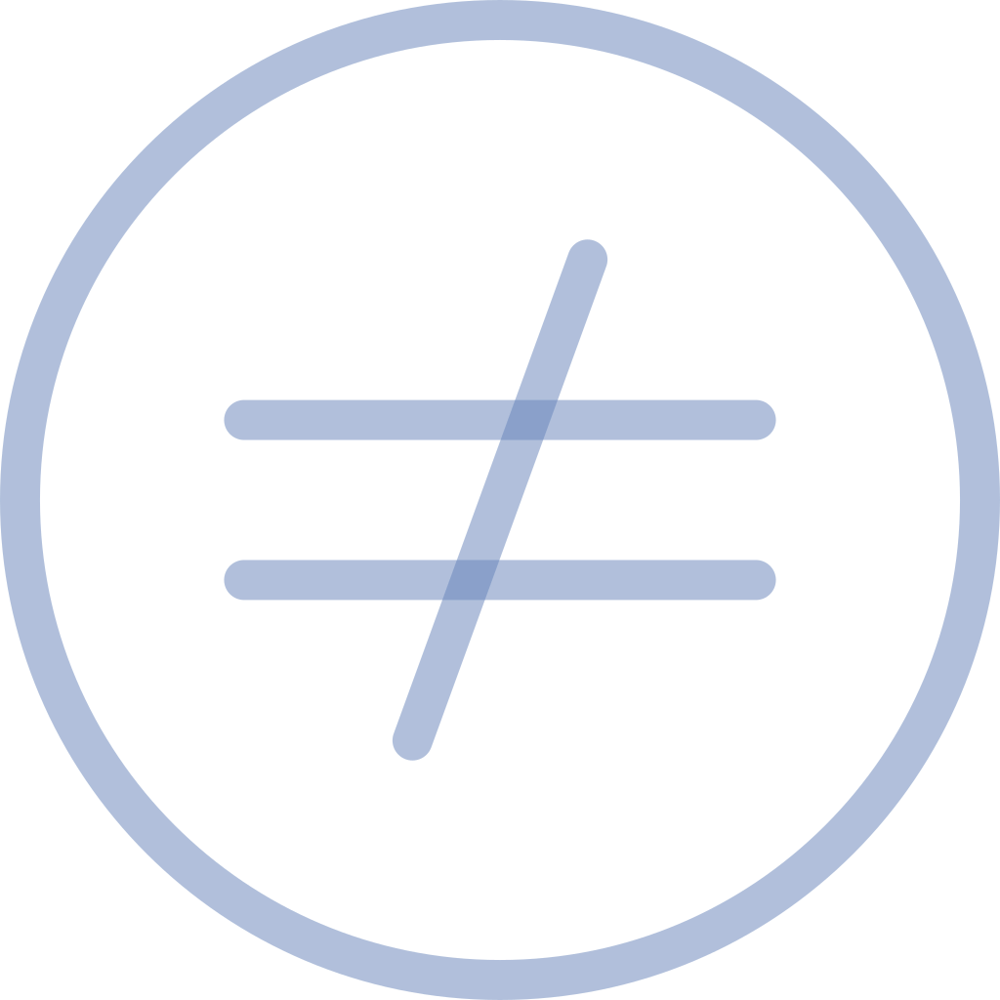Calculation:
Propagates true if input value not equal with the data provided.
Description:
Summary: This component takes data from other logic component(s) and after calculations provides it to another component(s). It updates its' output when the input value is changed. Inputs: Data of connected component(s) Output: Calculated data Settings: None
Selector image:

Calculation:
Propagates sum of two or more input values.
Selector image:
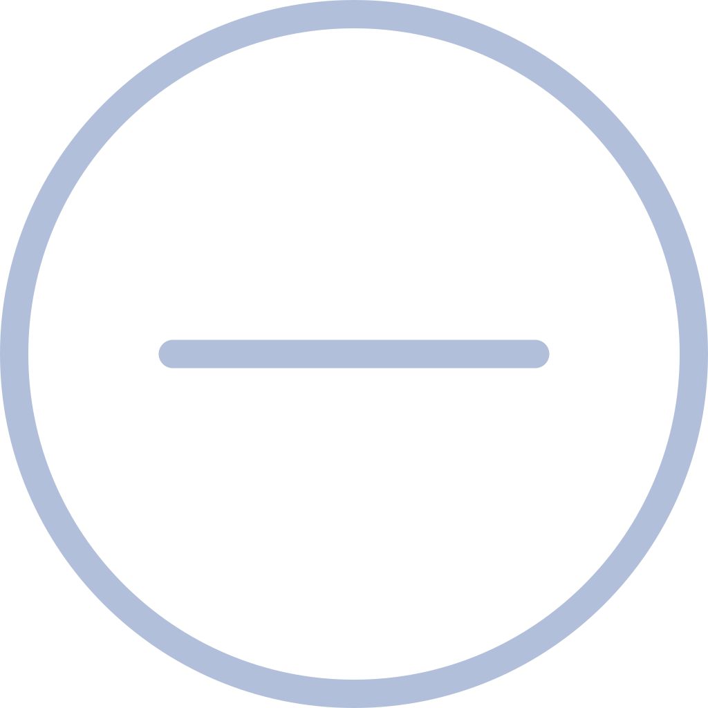Calculation:
Propagates difference of two or more input values.
Selector image:

Calculation:
Propagates product of two or more input values.
Selector image:

Calculation:
Propagates quotient of two or more input values. The first input is always the divident the others are the divisors.
Selector image:
Calculation:
Propagates remainder of arithmetic divison of two input values.
Selector image:

Calculation:
Propagates modulus of input value.

Calculation:
Propagates average value of two or more input values.
Description:
Summary: This component takes data from other logic component(s) and depending on the function provides count value or binary value to another component(s). It updates its' output(s) when the internal timer ticks or the input(s) value is changed.
Selector image:

Parameters:
Inputs: Enable (start/stop ticking), Reset (sets count to 0) Outputs: Count (tick count), State (start/stop state) Settings: Reset Delay: Delay after reset Interval: Ticking interval Init value: Count start value
Calculation:
Propagates incremental count value on 'Count' output and running state on 'State' output.
Selector image:

Parameters:
Inputs: Enable (start/stop ticking), Reset (sets count to 0) Outputs: Count (tick count), State (start/stop state) Settings: Reset Delay: Delay after reset Interval: Ticking interval Init value: Count start value
Calculation:
Propagates decremental count value on 'Count' output and running state on 'State' output.
Selector image:

Parameters:
Input: Pulse (start) Output: State Settings: Delay: Tick count Interval: Ticking interval
Calculation:
After getting pulse on input, propagates true value on the output for the Delay period then propagates false.
Selector image:

Summary: This component takes data from other logic component(s) and after calculations provides it to another component(s). It updates its' output when the input value is changed. Inputs: Data of connected component, Reset (sets output to 0) Output: Calculated data Settings: Reset Delay: Delay after reset Interval: Ticking interval Factor: Multiplier of calculation Init value: Calcualtion initial value
Calculation:
Propagates the value of the following calculation to the output on every ticks: value = ((current + previous) / 2) * Factor
Selector image:

Description:
Summary: This component takes data value from other logic component and if the input value is true starts a timer with the delay value and after timer stops propagates true value on the output if the input data value still true. If in meantime the input value changes to false the timer stops and propagates false value to the output. Input: Data of connected component Output: Delayed data value Settings: Delay: Interval
Selector image:
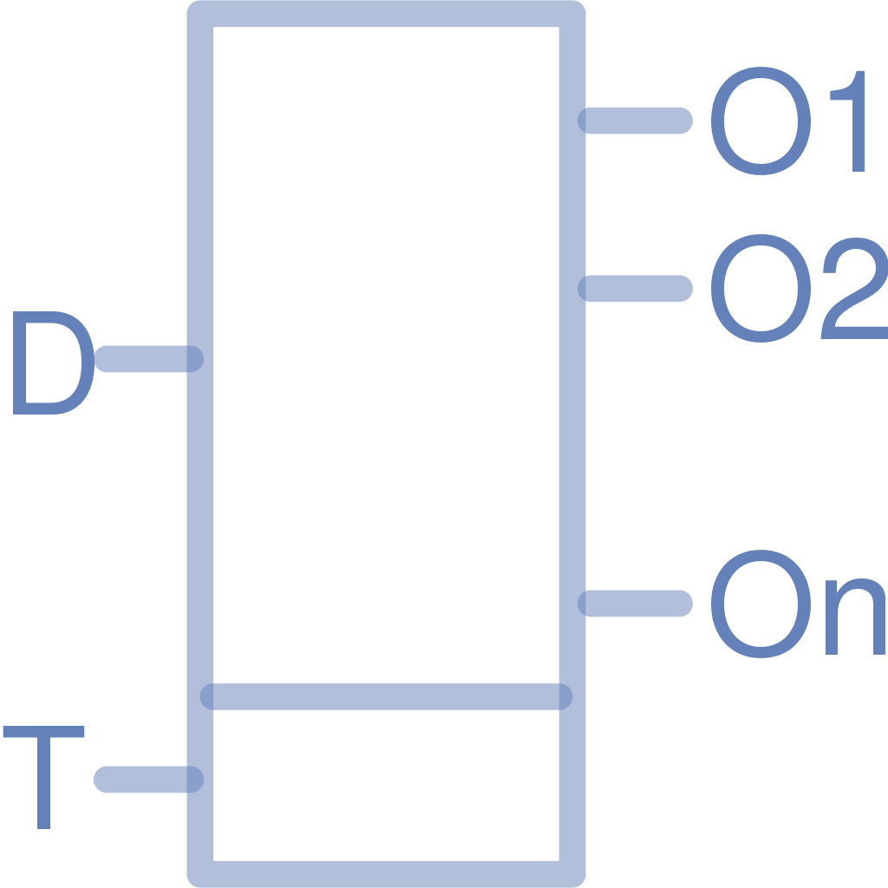Description:
Summary: This component takes data value from other logic component and depending on selector value provides the input value to the selected output. Provides "No data" value to all other outputs. Inputs: Data of connected component, Selector Outputs: Data to connected component(s) Settings: Outputs: Count of outputs
Selector image:

Description:
Summary: This component takes data value and stores into non-volitile memory from other logic component(s). The component duplicable which means all inputs and outputs connected to storage component with same Variable name accessing same memory variable. Initial value can be definded before any writing operation. It updates its' output when the input value is changed Input: Data from connected component(s) Output: Data to connected component(s) Settings: Variable: Name of the storage variable Init Value: Inital data value
Selector image:
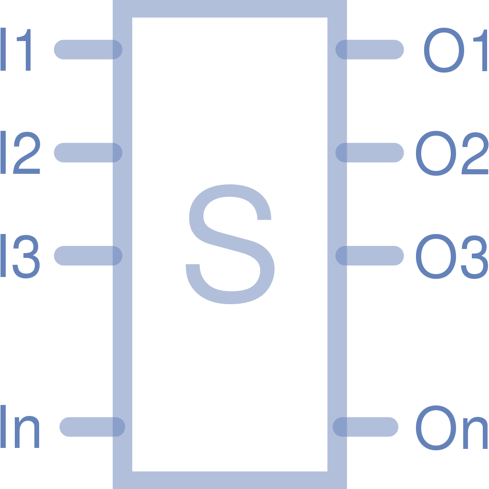Description:
Summary: This component runs javascript code defined in the script block. The script can run in two modes: One shot - Any input changes activates the process of the script Loop - Continuous processing of the script Input(s): Data from connected component(s) Output(s): Data to connected component(s) Settings: Mode: Script running mode Input count: Number of input(s) Output count: Number of output(s)
Selector image:
Description:
Summary: This component takes data value from other logic component. It updates its' output when Enable value or the input value is changed Input(s): Enable, (Data value from connected component) Output: Data to connected component Settings: Delay: Delay for propagation (optional) Data: If defined, data value to propagate otherwise the second input value used for the propagation.
Selector image:
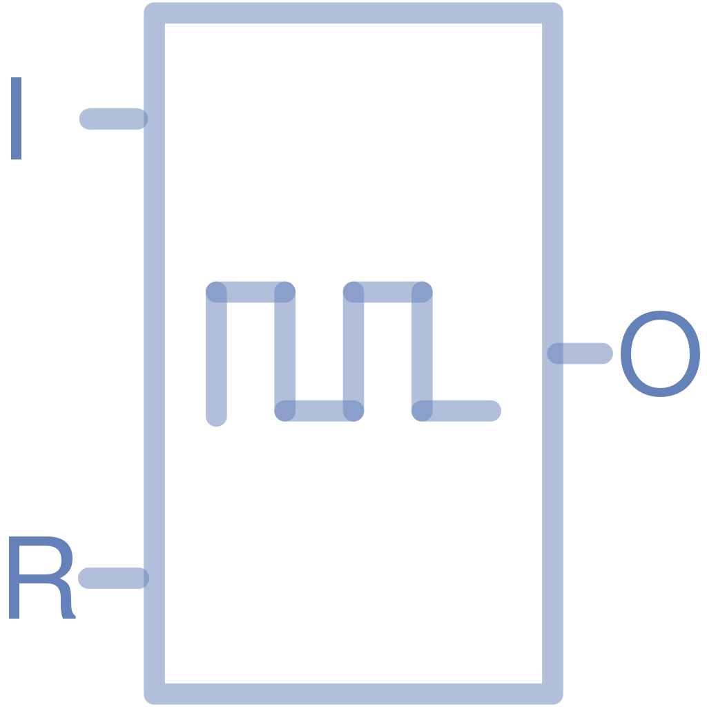Description:
Summary: This component takes data value from other logic components. Counts pulses on Data input and propagates count value to output. It updates its' output when the input value or Reset value is changed. Input(s): Data, Reset (set count = 0) Output: Data to connected component Settings: None
Selector image:
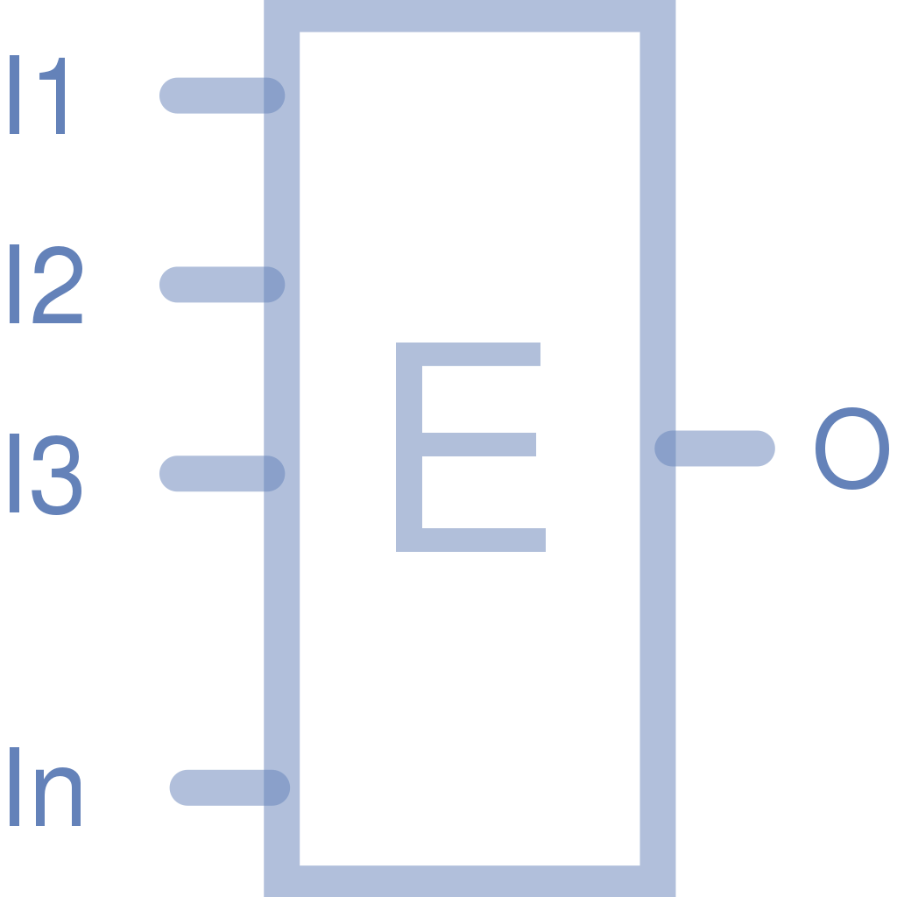Description:
Summary: This component takes data value from other logic component. Splits input value into bits and propagates bit values to corresponding outputs. (bit0 -> O1, bit1 -> O2, ...) It updates its' output when the input value is changed. Input: Data from connected component Outputs: Data to connected components Settings: Outputs: Count of output connections
Selector image:

Description:
Summary: This component takes data value from other logic components. Joins input bits into numeric value and propagates to output. (I1 -> bit0, I2 -> bit1, ...) It updates its' output when the input(s) value is changed. Inputs: Data from connected component(s) Output: Data to connected component Settings: Inputs: Count of input connections
Selector image:
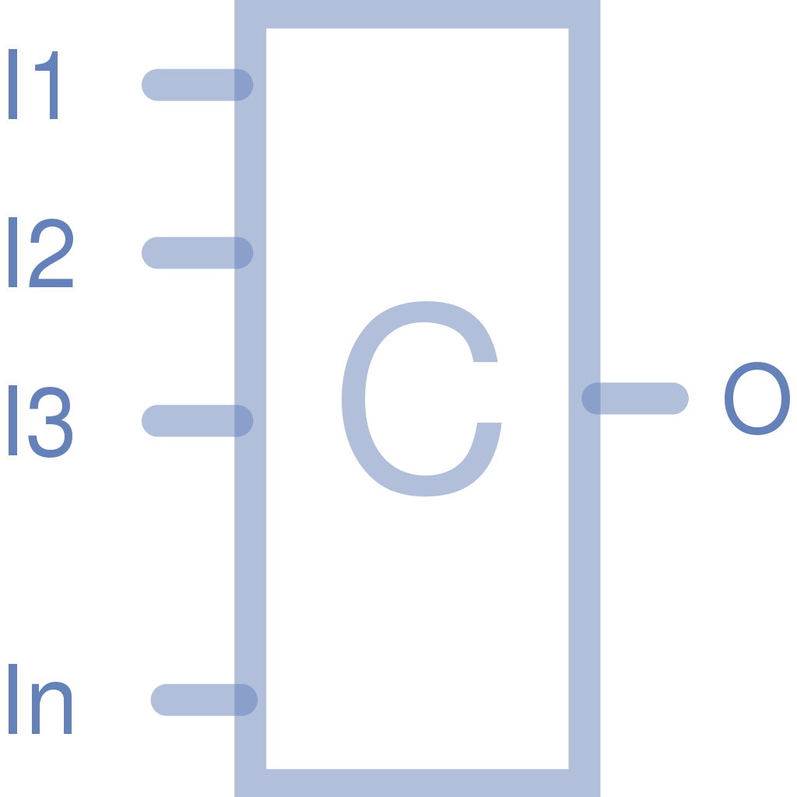Description:
Summary: This component takes data value from other logic components. Counts inputs with true values and propagates count value to output. It updates its' output when the input(s) value is changed. Inputs: Data from connected component(s) Output: Data to connected component Settings: Inputs: Count of input connections
Selector image:

Description:
Summary: This component propagates system's mute state value to output. It updates its' output when the mute state value is changed. Inputs: None Output: Data to connected component Settings: None
Creating new page:
Push the "New Page" button of the logic page selector horizontal bar. It creates new empty logic page.
Deleting page:
If the page content is empty it will be not exported to the logic definition file. When the file next time loaded the page will be not showed in the new layout.
Creating new component:
Push the "Add" button of the bottom menu. It opens the component properties popup. Depending on the component the popup opens with different content.
Copying component(s):
Select component(s) [with connection(s)] using left mouse button. Press "Ctrl+C" on the keyboard or use "Copy" button of the bottom menu.
Cuting component(s):
Select component(s) [with connection(s)] using left mouse button. Press "Ctrl+X" on the keyboard or use "Cut" button of the bottom menu. After paste the original selection will be deleted.
Pasteing component(s):
Press "Ctrl+V" on the keyboard or use "Paste" button of the bottom menu. The component(s) will appear with a small bottom-righ offset of copied component(s) original position. The paste works on different page as well.
Moving component(s):
Drag component with left mouse button and drop to the expected position. It will redraw all connections related to the component so after they need to be re-adjusted to avoid caotic layout.
Deleting component:
Click left mouse button on component. Press "Del" on the keyboard or use "Delete" button of the bottom menu.
Creating new connection:
Hover the mouse on source components output pin. When the green circle appears click left mouse button and hold. Hover to destination components input pin and release the button. It makes connection between the pins.
Justifying & deleting connection:
Click left mouse button on connection line. To delete of the connection press "Del" on the keyboard or use "Delete" button of the bottom menu. Multiple selections are allowed. To justify of the connection is possible with dragging of the green squares along the connection path.
Pressing "Open" button in file menu opens the operating system's open file dialog. The default name for the logic definition is: "logic-export.json".
Before saving the logic it's necessary to checking is there any unconnected pin left in the logic.
The check is possible with pressing "Check" button of file menu. The checking procedure result apears in a popup.
If no errors found, the "Save" button will be enabled in the file menu. Pressing "Save" button opens the operating system's save file dialog.
It can be saved anywhere with any name. To able import the logic into kratos it should be saved on a USB stick's root with name: "logic-export.json".
The defined MODBUS components will be used in logic definitions and Posedion sensor widget to attach input or output for MODBUS communication.
This screen consists of 5 definition areas:
Device templates Device definitions Device fields Device field definitions
Each area has control menu at the bottom of the area (in order):
Add Creates new area definition Edit Edits area definition Delete Deletes area definition
Creating new device template:
Push the "Add" button of the bottom menu. It opens device template setup popup with editable parameters. Push the "Save" button at the bottom of popup to create new device template with the given parameters.
Editing device template:
Push the "Edit" button of the bottom menu. It opens device template setup popup with editable parameters. Push the "Save" button at the bottom of popup to modify new device template with the given parameters.
Deleting device template:
Push the "Delete" button of the bottom menu. It opens a confirmation popup. Push the "Yes" button at the bottom of popup to delete device template.
Creating new device field:
Push the "Add" button of the bottom menu. It opens device field setup popup with editable parameters. Push the "Save" button at the bottom of popup to create new device field with the given parameters.
Editing device field:
Push the "Edit" button of the bottom menu. It opens device field setup popup with editable parameters. Push the "Save" button at the bottom of popup to modify new device field with the given parameters.
Deleting device field:
Push the "Delete" button of the bottom menu. It opens a confirmation popup. Push the "Yes" button at the bottom of popup to delete device field.